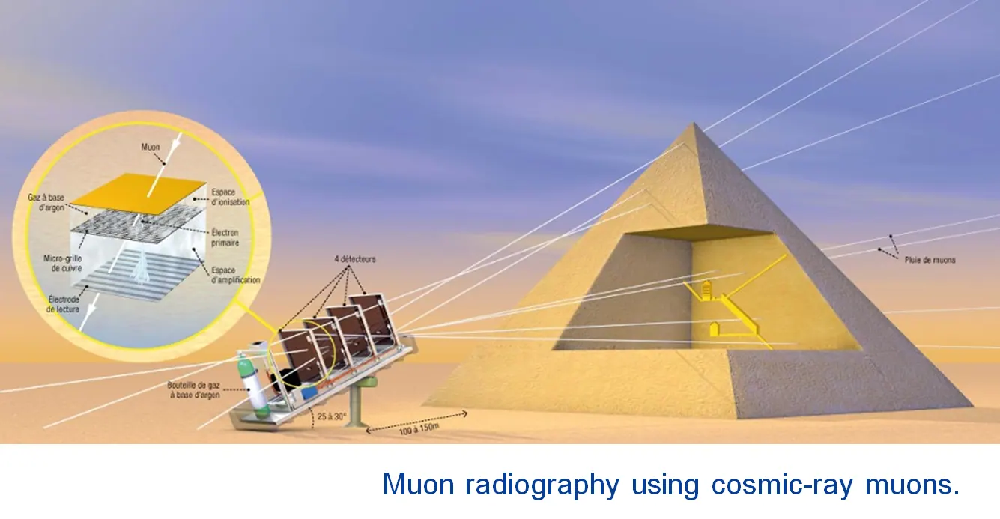
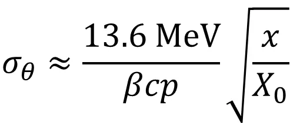

07/07About Muons缪子科普
Muography Applications缪子成像应用
Muography is X-ray imaging on a giant scale. Instead of an X-ray tube, it uses the cosmic muons that fall on every part of the Earth, day and night, for free. Because muons can pass through hundreds of metres of rock, they let us look inside pyramids, volcanoes, tunnels and shipping containers — without drilling, digging or adding any radiation.
缪子成像是一种“超大尺度”的X光成像。它不需要X光管，而是利用昼夜不停、免费落在地球每个角落的宇宙线缪子。由于缪子能穿透数百米厚的岩石，我们得以“看见”金字塔、火山、隧道和集装箱的内部——无需钻孔、开挖，也不增加任何辐射。
Two ways to image with muons两种缪子成像方法
Muon radiography: counting the shadow缪子透射成像：数“影子”
Muons lose energy steadily as they pass through matter (described by the Bethe–Bloch formula). The more material along a path, the fewer muons have enough energy to make it through. A detector placed below or beside an object counts muons arriving from each direction and compares the count with what it would see under open sky. Knowing the cosmic-muon energy spectrum, the missing fraction tells us how much material — the density times the length — lies along each line of sight.
缪子穿过物质时会持续损失能量（由贝特—布洛赫公式描述）。路径上的物质越多，能穿过去的缪子就越少。将探测器放在物体下方或侧面，统计来自各个方向的缪子数，并与空旷天空下的计数相比较；已知宇宙线缪子能谱，缺失的比例就能告诉我们每条视线上有多少物质——即密度与长度的乘积。


- Works for very large objects — mountains, volcanoes, pyramids, dams — from tens of metres to kilometres.
- 适用于超大型物体——山体、火山、金字塔、大坝——尺寸从几十米到几公里。
- Gives a 2D density map from one location; combining several viewpoints gives a 3D picture, much like a CT scan.
- 单一位置可得到二维密度图；结合多个观测位置可重建三维图像，类似CT扫描。
- Hidden voids show up as directions with more muons than expected; dense bodies show up as fewer.
- 隐藏的空腔表现为缪子比预期多的方向；致密物体则表现为缪子更少。
Muon scattering tomography: measuring the kicks缪子散射成像：测量“偏折”
For smaller objects, a few metres across, almost all muons pass straight through — but not quite straight. Each muon is deflected by many tiny scatterings off atomic nuclei, and the deflection is much larger in dense, high-atomic-number materials such as lead, uranium or steel. Tracking detectors above and below the object measure each muon's incoming and outgoing direction; the scattering angle reveals what it passed through.
对于尺寸只有几米的较小物体，几乎所有缪子都能穿过——但并非笔直穿过。每个缪子都会因与原子核的大量微小散射而偏折，且在铅、铀、钢铁等高密度、高原子序数材料中偏折更大。在物体上方和下方放置径迹探测器，测量每个缪子的入射与出射方向，散射角就能揭示它穿过了什么。


- The spread (root-mean-square) of scattering angles grows with the amount of material, measured in radiation lengths, and falls with muon momentum.
- 散射角分布的展宽（均方根）随物质的辐射长度数增加而增大，随缪子动量增大而减小。
- A simple, widely used 3D algorithm, the Point of Closest Approach (PoCA), assigns each scatter to the point where the incoming and outgoing tracks come closest. More advanced methods use maximum-likelihood or machine learning.
- 一种简单而广泛使用的三维重建算法是“最近点法”（PoCA），把每次散射归于入射与出射径迹最接近的点；更先进的方法采用最大似然或机器学习。
- Ideal for finding high-Z material in cargo, inspecting nuclear waste containers, or locating steel reinforcement and defects in concrete.
- 非常适合在货物中寻找高原子序数物质、检查核废料容器，或定位混凝土中的钢筋与缺陷。


Try it yourself: our SciFi-MST live demo simulates a scintillating-fibre muon scattering tomograph in your browser, reconstructing scattering-density slices event by event.
亲自体验：我们的 SciFi-MST 在线演示在浏览器中模拟闪烁光纤缪子散射成像仪，逐个事例重建散射密度切片。
Strengths and limits优势与局限
| Strengths优势 | Limits局限 |
|---|---|
| Completely passive and safe — uses only natural radiation完全被动、安全——只利用天然辐射 | Low flux: measurements take hours to months通量低：测量需要数小时到数月 |
| Penetrates hundreds of metres of rock可穿透数百米岩石 | Muons mostly come from above, so the detector must sit below or beside the target缪子主要来自上方，探测器须置于目标下方或侧面 |
| Non-invasive: no drilling or contact非侵入：无需钻孔或接触 | Spatial resolution limited by statistics and geometry空间分辨率受统计量与几何限制 |
| Can monitor changes continuously over time可长期连续监测变化 | Results need careful simulation and calibration结果需要细致的模拟与标定 |
Where muography is used缪子成像的应用场景
Geophysics: inside volcanoes and mountains地球物理：火山与山体内部
Since the 2000s, Japanese teams led by Hiroyuki Tanaka have imaged the magma conduits of volcanoes such as Asama and Satsuma-Iwojima, and watched them change before eruptions. Similar work has followed at Vesuvius, Stromboli and Etna in Italy and La Soufrière in the Caribbean. Muography is also used to map ore bodies and caverns in mines, and karst cavities in limestone.
21世纪以来，田中宏幸（Hiroyuki Tanaka）领导的日本团队对浅间山、萨摩硫黄岛等火山的岩浆通道进行了成像，并观测到喷发前的变化。意大利的维苏威、斯特龙博利、埃特纳火山以及加勒比海的苏弗里耶尔火山也开展了类似研究。缪子成像还被用于勘测矿山中的矿体与洞穴，以及石灰岩中的岩溶空洞。


Archaeology: hidden rooms考古：隐藏的空间
In 1970 Luis Alvarez placed spark chambers in a chamber beneath the Pyramid of Khafre and showed that there were no large hidden rooms in the region they covered. Almost fifty years later, in 2017, the ScanPyramids team combined nuclear emulsion, scintillator and gas detectors to find a large void above the Grand Gallery of the Great Pyramid of Khufu, and in 2023 confirmed a hidden corridor behind its north face. Muography has also been used beneath Naples to map ancient underground cavities, and to look for anomalies inside the historic city wall of Xi'an in China.
1970年，阿尔瓦雷茨在哈夫拉金字塔下方的墓室中放置火花室，证明在其覆盖范围内不存在大型隐藏墓室。近五十年后的2017年，ScanPyramids 团队综合使用核乳胶、闪烁体和气体探测器，在胡夫大金字塔大走廊上方发现了一个巨大空腔，并于2023年证实其北立面后方存在一条隐藏通道。缪子成像还被用于绘制那不勒斯地下古代洞穴，以及探测中国西安古城墙内部的异常结构。


Safety and security安全与安保
After the 2011 Fukushima Daiichi accident, muography was used to see where melted nuclear fuel had ended up inside the damaged reactors, where no person or camera could go. Scattering systems scan trucks and shipping containers for hidden nuclear material, and inspect sealed casks of spent nuclear fuel.
2011年福岛第一核电站事故后，缪子成像被用来查明熔化的核燃料在受损反应堆内的位置——那里人和摄像机都无法进入。散射成像系统可以扫描卡车和集装箱中隐藏的核材料，并检查密封的乏燃料容器。


Cities and infrastructure城市与基础设施
Modern cities depend on what lies beneath them — tunnels, metro lines, utility corridors and foundations. Muography can check for voids, water ingress and sediment without interrupting traffic, and can be left in place to monitor changes over months. Engineers are also testing it on blast furnaces, dams, bridges and the ground above underground construction.
现代城市依赖其脚下的一切——隧道、地铁、综合管廊和地基。缪子成像可以在不中断交通的情况下检测空洞、渗水和泥沙淤积，并可长期放置，持续数月监测变化。工程师们还在高炉、大坝、桥梁以及地下施工区域上方的地层中测试这项技术。
Muography in our group本课题组的缪子成像研究
Our group began working on muography in mid-2024, bringing detector and simulation know-how from the Muon g−2 and muEDM experiments to problems in Shanghai and beyond.
本课题组于2024年年中开始开展缪子成像研究，把在 Muon g−2 和 muEDM 实验中积累的探测器与模拟经验应用于上海乃至更广泛地区的实际问题。
- Shanghai Outer Ring Tunnel: a pilot run inside this immersed tunnel beneath the Huangpu River showed that the muon flux tracks the tidal water level, demonstrating muography's sensitivity to the sediment overburden (J. Appl. Phys. 2025). Read more →
- 上海外环隧道：在这条黄浦江下的沉管隧道中开展的先导实验表明，缪子通量随潮位变化，证明了缪子成像对泥沙覆盖层的灵敏度（J. Appl. Phys. 2025）。了解更多 →
- Cosmic-ray Muography System: a three-layer scintillator-bar tracker at TDLI, now taking radiography data. Read more →
- 宇宙线缪子成像系统（CMS）：位于李政道研究所的三层闪烁体条径迹探测器，已开始采集透射成像数据。了解更多 →
- Field survey in Malaysia (2026): our portable detectors were taken abroad for the first time, to an air-raid shelter, a limestone cave and other sites in karst regions where underground cavities can cause road collapses. Read more →
- 马来西亚实地勘测（2026）：我们的便携式探测器首次走出国门，前往防空洞、石灰岩洞穴等岩溶地区现场——当地地下空洞可能导致道路塌陷。了解更多 →
- Challenge Cup 2026: the project “Muon imaging — safeguarding the development of megacities” won a First Prize in the Shanghai entrepreneurship competition. Read more →
- 2026年“挑战杯”：项目“缪子成像——守护超大城市发展”荣获上海市创业计划竞赛一等奖。了解更多 →
Our muography research →我们的缪子成像研究 →
References参考文献
- L. W. Alvarez et al., “Search for hidden chambers in the pyramids,” Science 167, 832 (1970). doi:10.1126/science.167.3919.832
- K. N. Borozdin et al., “Radiographic imaging with cosmic-ray muons,” Nature 422, 277 (2003). doi:10.1038/422277a
- K. Morishima et al., “Discovery of a big void in Khufu's Pyramid by observation of cosmic-ray muons,” Nature 552, 386 (2017). doi:10.1038/nature24647
- S. Procureur et al., “Precise characterization of a corridor-shaped structure in Khufu's Pyramid by observation of cosmic-ray muons,” Nat. Commun. 14, 1144 (2023). doi:10.1038/s41467-023-36351-0
- G. Saracino et al., “Applications of muon absorption radiography to the fields of archaeology and civil engineering,” Phil. Trans. R. Soc. A 377, 20180057 (2019). doi:10.1098/rsta.2018.0057
- G. Bonomi et al., “Applications of cosmic-ray muons,” Prog. Part. Nucl. Phys. 112, 103768 (2020). doi:10.1016/j.ppnp.2020.103768
- K. Borozdin et al., “Cosmic ray radiography of the damaged cores of the Fukushima reactors,” Phys. Rev. Lett. 109, 152501 (2012). doi:10.1103/PhysRevLett.109.152501
- H. Miyadera et al., “Imaging Fukushima Daiichi reactors with muons,” AIP Advances 3, 052133 (2013). open-access record
- G. Liu et al., “High-precision muography in archaeogeophysics: a case study on Xi'an defensive walls,” J. Appl. Phys. 133 (2023). doi:10.1063/5.0123337
- G. Liu et al., “Deep investigation of muography in discovering geological structures in mineral exploration: a case study of Zaozigou gold mine,” Geophys. J. Int. 237, 588 (2024). doi:10.1093/gji/ggae057
- H. K. M. Tanaka et al., “Muography,” Nat. Rev. Methods Primers 3, 88 (2023). doi:10.1038/s43586-023-00270-7
- 姚凯强 等 (K. Yao et al.), “宇宙射线缪子成像技术在中国的研究进展 Research progress of muography in China,” Chin. J. Inorg. Anal. Chem. 14, 715 (2024). doi:10.3969/j.issn.2095-1035.2024.06.004
- K. S. Khaw et al., “Towards non-invasive sediment monitoring using muography: a pilot run at the Shanghai Outer Ring Tunnel,” J. Appl. Phys. 138, 114902 (2025). doi:10.1063/5.0273686